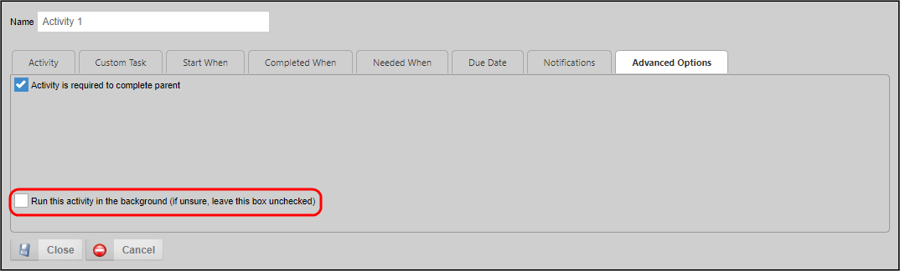

Process Timeline is the automation of a business process in which documents, information or tasks are passed from one participant(s) to another for action. A Process Timeline is made up of many functions and activities such as a review process, Task Lists, notifications, alerts/triggers, reminders, context sensitive tasks, an approval process, status/tracking, due dates and reporting.
Process Timeline Definitions in Process Director are a series of logical activities, each with a specific task and assigned participants. The Process Timeline defines the path or route that a Form or document must take. Each Activity in the Process Timeline path defines the task type, the participants, and the rules that govern how the Process Timeline will advance or transition to the next Activity.
The Process Timeline may look familiar to you, because it is presented in Gantt chart format. The Gantt chart is a type of chart that places each Activity in a process on a single line that is horizontally marked in some increment of time, usually days. Each Activity is marked with a bar that whose left end begins at the task's start date, and ends at the task's end date. This type of chart is widely used in project management.
Process Director uses this generic Gantt chart format for the Process Timeline, and adds additional functionality for use in modeling and managing business processes. BP Logix developed the Process Timeline to address the need to measure and predict process execution times.
Time is not a process driver for a Workflow. Indeed, looking at a Workflow diagram gives you no sense of how long completing the Workflow, or any Workflow Task, will take. The Process Timeline, on the other hand, shows you immediately and graphically how much time your process, and each Process Activity, should take. Because the Process Timeline incorporates time explicitly as a process driver, and records the process times for each Timeline instance, Process Director can, using historical data, predict how long each Activity and process will take, and compare that prediction to your configured times. For instance, with the Process Timeline, Process Director can use historical data to predict whether an Activity will be early or fail to meet its configured due date, often well in advance of the Activity starting. This predictive ability enables Process Director, using the Process Timeline model, to provide you with the earliest possible notification of slippages in the process' scheduled run time.
Another important difference between Workflows and Process Timelines is that Timelines are constraint-driven. In a Workflow, tasks don't start until they are prompted to begin when the Workflow follows a specific branch. In a Process Timeline, however, all Timeline activities want to run all the time. The designer's job with a Process Timeline is to apply constraints to each Activity to prevent it from running immediately. By default, this makes Process Timelines implicitly parallel. If you add two activities to a new Process Timeline, but don't configure any restraints, then both activities will run immediately, and in parallel, as soon as the Process Timeline instance starts. Conversely, in a Workflow, you must explicitly specify when two steps must run in parallel.
Business users design Process Timelines by answering three questions that define the Activity's constraints, as they add each step to the process:
The Process Timeline's constraint-driven model enables organizations to build robust, complex executable process models within Process Director much more easily than the Workflow model can allow. The result is a solution with many valuable features:
Most activities have a dependence on one or more other activities. Dependence refers to the requirement that an Activity can't begin until a predecessor Activity, or activities, ends. This type of relationship (often referred to by project managers as finish-to-start) represents the most fundamental starting condition for any Activity.
Below is a sample Process Timeline, consisting of three tasks, or activities. The Timeline column of the Process Timeline shows the number of days planned for each Activity. Initial Approval is scheduled to take three workdays, Finance Approval is expected to take two workdays, and the Submitter Notification will take 0 workdays, as it is an automated process that will be performed by Process Director. The Finance Approval Activity is dependent on the Initial Approval. The Submitter Notification, in turn, is dependent on Finance Approval.

An Activity may also be a parent or child Activity. A parent Activity is a container for other, subordinate activities, each of which is referred to as a child Activity. Child activities have an implied dependence on their parent, so, absent any additional conditions, the child activities begin when the parent Activity begins. Once all of the child activities are complete, the parent is complete.

Each Activity in the Process Timeline has an Actions column with four icons, each of which enable you to modify one of the Activity's properties.
|
ICON |
ACTION |
|---|---|
|
|
Drag to move under another parent: Drag the Activity to a parent Activity. The Activity you drag will become a child of that parent. |
|
|
Drag to move order: Change where the Activity appears in the Process Timeline. Note: changing the location of the Activity doesn't change the behavior of the Process Timeline, which is strictly governed by the rules of dependence and other Activity starting conditions. |
|
|
Drag to add a dependence: Drag and drop an Activity onto another to make the dragged Activity dependent upon the target. |
|
|
Conditions: Click this icon to open the Activity's properties on the Needed When tab. |
|
|
Properties: Click this icon to open the Activity's properties on the Start When tab. |
An Activity can be added to the Process Timeline by clicking the Create Activity action link. When a new Activity is added to the Timeline, it will be automatically selected and highlighted. Once an Activity has been added, the properties for each Activity are presented in a tabbed interface that can be accessed by double-clicking on the Activity name, or clicking on the Properties icon for the Activity. Each tab in the interface groups similar properties together.
|
TAB |
DESCRIPTION |
|---|---|
|
Activity |
This tab enables the user to select the Activity Type, such as a User, Custom Task, Form Action, etc. It also contains other general Activity settings. |
|
Activity type |
This tab will show specific properties that pertain to the Activity Type you select. The tab's label will change to reflect the selected Activity Type. |
|
Start When |
This tab enables you to inspect and modify the dependencies and conditions that determine when the Activity will start. |
|
Completed When |
This tab enables you to inspect and modify the conditions that determine when the Activity will complete. Rarely used, as most activities complete organically (such as when a user submits a form, or an automated task completes). |
|
Needed When |
This tab enables you to inspect and modify the conditions that determine if an Activity will be run once its start conditions have been met. These conditions will be evaluated once when the Activity becomes eligible to start. |
|
Due Date |
This tab enables you to inspect and modify the due date for the Activity, and the actions to take when the Activity is not completed by the due date. |
|
Notifications |
This tab enables you to configure who is notified about the Activity and when notifications should be sent. |
|
Advanced Options |
This tab enables you to configure advanced properties, such as how the Activity is assigned to user, what steps to take when a user completes the Activity, etc. |
A business process may occasionally need to invoke a separate process as a subprocess, or child process, of the main process. This subprocess may need to run synchronously or asynchronously with the main, or parent, process.
A synchronous subprocess pauses the parent process while it is running. Once the subprocess completes, the parent process continues from the point where the synchronous subprocess began. The parent process can't continue until the subprocess is complete.
An asynchronous subprocess, on the other hand, does not pause the main process while subprocess runs. Instead, both processes will run in parallel, and both will complete independently of each other.
To invoke a subprocess to run synchronously, you can use the Process Activity Type. To invoke a subprocess to run asynchronously, you can use the Custom Task Activity Type, and use the Run Process Custom Task to start the desired subprocess.
The examples below use software simulation to walk through the process of creating a synchronous or asynchronous subprocess.
Create a synchronous subprocess
Create an asynchronous subprocess
Create a Callable Subprocess that can be used by many different applications.
A Timeline Activity of the Custom Task, Script or Process types can be configured to run in the background by checking the Run this Activity in the background (if unsure, leave this box unchecked) check box in the Advanced Options tab. Setting the operation to run in the background can be used to prevent a long-running, machine-centric Activity in the Process Timeline from hanging a user session while the processing occurs. The Activity will be run in a different context from the current user's, even inf the user invoked the transition of the Activity. Additionally, if you have a Rendering Server enabled, the background processing will be conducted by the Rendering Server when the option is checked.

Please note that, when this option is selected, if the user's task is followed (after one or more intervening "background" tasks) by another task assigned to the same user, the current behavior in which the window remains open and is refreshed with the Form for the subsequent task will no longer be seen. Instead, the Form will close, and the user will have to click the appropriate link in their Task List or email notification to open the for to complete the new task.
On some systems, when starting a subprocess using the asynchronous option, the system can mark the calling task as complete before the called subprocess completes. This may be especially true if the subprocess contains complex rendering operations. To avoid this, a wait time, in seconds, can be set using the nAsyncSubProcessWaitSecs variable in the Custom Vars file. The default setting for this variable is 5 seconds.
To see other Process Timeline topics, you can use the Table of Contents displayed on the upper right corner of the page, or use one of the links below.
Process Timeline Definitions: General Properties for configuring a Process Timeline.
Process Timeline Activities: Properties for configuring Timeline activities.
Managing Process Timeline Instances: Information about how to perform administrative actions on Timeline instances.